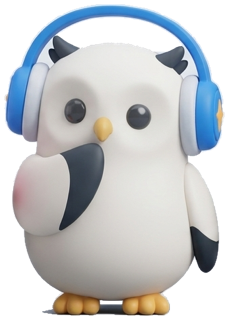
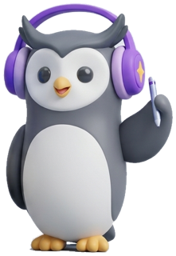

名前の由来
Lexicon×Sophia
言葉や語彙を意味する「Lexicon」と、ギリシャ語で知恵を意味し、上智大学の英語名にも用いられる「Sophia」。英語を暗記で終わらせず、理解し、考え、使える知識へ変えるという思いを名前に込めました。
LexSophia
どんなTOEIC診断から始めますか？
クイック総合診断20問 · 約7〜10分
PRACTICE · PART 1–7 & TOPIC DRILLS

Part 5「1問20秒」タイムアタック
正答率×解答速度でS〜Cランク判定
Listening「穴埋めディクテーション」
音の連結・弱形を聞き取る耳トレ
DIAGNOSIS REPORT
得意分野
語彙
優先対策
Part 7 推測
まずは Part 7 の推測問題から対策するのが最短です。
ホーム画面にLexSophiaを追加
アプリアイコンから1タップで毎日の1問・単語帳を起動できます。
confirm a reservation
タップして日本語訳を確認
About LexSophia
LexSophiaは、上智大学の学生から生まれた英語学習ツールです。英語学習を、問題を解いて終わるものにせず、自分の現在地を理解して次の学習へ進める体験を目指しています。
名前の由来
Lexicon×Sophia
言葉や語彙を意味する「Lexicon」と、ギリシャ語で知恵を意味し、上智大学の英語名にも用いられる「Sophia」。英語を暗記で終わらせず、理解し、考え、使える知識へ変えるという思いを名前に込めました。
LexSophiaの哲学
診断から、次の一歩へ。
なぜ間違えたのか。自分は何が苦手なのか。次に何を学べばよいのか。正解と不正解の記録を、成長のための知恵に変え、学習者が次の一歩を迷わず選べるサービスを目指します。
Where language meets wisdom.
言葉と知恵が出会う場所。
クイック：20問・約7〜10分。Reading：20問・約10〜15分。Listening：20問・約10分。総合：40問・約20〜25分。時間は目安です。
正答率と問題の難しさをもとに独自に推定し、Readingでは解答時間も考慮します。公式テストではなく、本番の点数を保証しません。表示範囲も統計的に検証された信頼区間ではなく、学習の目安です。
登録不要・完全無料で全モードの診断、日本語訳・ポイント解説、間違えた苦手問題の復習を利用できます。教材ガイドの書籍購入やアカウント同期はすべて任意です。
Lexicon × Sophia
Where language meets wisdom.
LexSophiaは上智大学の学生が個人で開発するサービスであり、上智大学の公式サービスではありません。
TOEIC®はETSの登録商標です。本サービスはETSによる承認・公認を受けたものではなく、IIBCとの提携・公式承認関係もありません。
TOEIC® is a registered trademark of ETS. This product is not endorsed or approved by ETS.
© 2026 LexSophia. All rights reserved.
短時間のテストから、現在のスコアと優先して学ぶべき分野を分析します。
PART PRACTICE & TOPIC DRILLS
診断の前に · 任意
持っている資格を選んでください。複数選択できます。
資格がない方・入力したくない方は、そのままスキップできます。
PART PRACTICE
診断と共通の問題を使用しています。英文・和訳・解説で復習しましょう。
PRACTICE COMPLETE
練習の正答率です。TOEICの予想スコアには換算しません。
PART 5 TIME ATTACK
1問20秒のスピード特訓結果です。
素晴らしいスピードと正確さです！
正答数
8 / 10
1問平均
12.4秒
時間切れ
0問
CLOZE DICTATION GYM
音声を聞いて、空欄に入る2〜3語をタップまたは入力してください。
DICTATION COMPLETE
音の連結や弱形を意識すると、Part 2・3・4の聞き取り精度が一段上がります。
音声を再生
再生後に回答を選択できます
回答を選択してください
Listening完了
Listeningの回答は保存されました。準備ができたらReading 20問を始めてください。
20問の回答結果をもとに算出した予測値です。公式スコアではありません。
予想TOEIC® Readingスコア
0
/ 495
Part 5
—
—
Part 6
—
—
Part 7
—
—
受験者の中での位置（推定）
—
友達は何％？ 同じモードで比べてみよう。
日本のTOEIC L&R公開テストについて、IIBC公式掲載の20,269人の分布と比較しています（2026年9月26日参照）。全年度・全受験者・大学受験生に限定した順位ではありません。
予想スコアが属する公式スコア区分の下限以上の割合を使用します。区分内の細かな順位は推定しません。診断スコア自体も非公式の目安であり、本番での順位を保証しません。
出典：IIBC 平均スコア・スコア分布正答数
—
正答率
—
所要時間
—
1問あたりの平均
—

得意分野
—
苦手分野
—
優先して対策すべき分野
—
Part 5（短文穴埋め）を集中演習
解説・和訳つきで今すぐ対策できます。
GOAL REVERSE COACH
目標スコアまでの逆算アドバイス
下のボタンから目標スコアを選ぶと、必要な上積み点数と優先対策を計算します。
全問正解です！
TOEIC®はETSの登録商標です。本サービスはETSによる承認・公認を受けたものではなく、IIBCとの提携・公式承認関係もありません。
TOEIC® is a registered trademark of ETS. This product is not endorsed or approved by ETS.
回答結果をもとに算出した予測値です。公式スコアではありません。
予想TOEIC® Listeningスコア
0
/ 495
Listening
—
Reading
—
受験者の中での位置（推定）
—
友達は何％？ 同じモードで比べてみよう。
日本のTOEIC L&R公開テストについて、IIBC公式掲載の20,269人の分布と比較しています（2026年9月26日参照）。全年度・全受験者・大学受験生に限定した順位ではありません。
予想スコアが属する公式スコア区分の下限以上の割合を使用します。区分内の細かな順位は推定しません。診断スコア自体も非公式の目安であり、本番での順位を保証しません。
出典：IIBC 平均スコア・スコア分布Listening
—
Reading
—
Listeningの得意分野
—
優先して対策
—
Part 2（応答問題）を集中演習
解説・和訳つきで今すぐ対策できます。
GOAL REVERSE COACH
目標スコアまでの逆算アドバイス
下のボタンから目標スコアを選ぶと、必要な上積み点数と優先対策を計算します。
音声はAIによる合成音声です。TOEIC®はETSの登録商標であり、本サービスはETS・IIBCの承認を受けていません。
スコアと弱点をもとに教材を選定
あなたに合う教材が見つかりました
あなたへのおすすめ
教材情報は準備中です
広告・アフィリエイトリンクを含みます。Amazonのアソシエイトとして、LexSophiaは適格販売により収入を得ています。
全問正解です！
BOOK GUIDE · 10冊
LexSophiaの診断で実際におすすめ候補として使う教材です。現在地と弱点に合う一冊から始められるよう、役割を分けています。
各教材の「Amazonで見る」から商品ページが別タブで開きます。価格・在庫・版の詳細はAmazonでご確認ください。教材はスコア帯と学習目的に合わせて選びましょう。
広告・アフィリエイトリンクを含みます。Amazonのアソシエイトとして、LexSophiaは適格販売により収入を得ています。
LEARNING JOURNAL · 10本
解き方を暗記するだけでなく、間違えた理由を次の正解に変えるための実践ガイドです。
今日からやること
まず、志望業界を選んでください。
この業界で参考になる水準を表示しています。
累計の診断データから、弱点と目標までの不足を客観的に可視化します。
連続学習
0日
累計 0日
最新スコア
—
—
自己ベスト
—
—
診断回数
0回
復習 0問
クイック総合診断（20問）を受けると、5軸パラメータ・Part別不足率・失点パターンTOP3がここに自動で生成されます。
Listening / Reading バランス
—
—
平均解答スピード
—
—
—
最優先の対策処方
—
—
ログインすると、診断結果と苦手問題がクラウドに保存され、スマホ・PCなど別の端末でも続きから学習できます。ログインしなくても今まで通り使えます。
2回連続で正解すると、その問題は苦手リストから卒業します。
今回の正答数
— / —
途中まで回答済みの場合は、一時保存してあとから続きを再開することもできます。